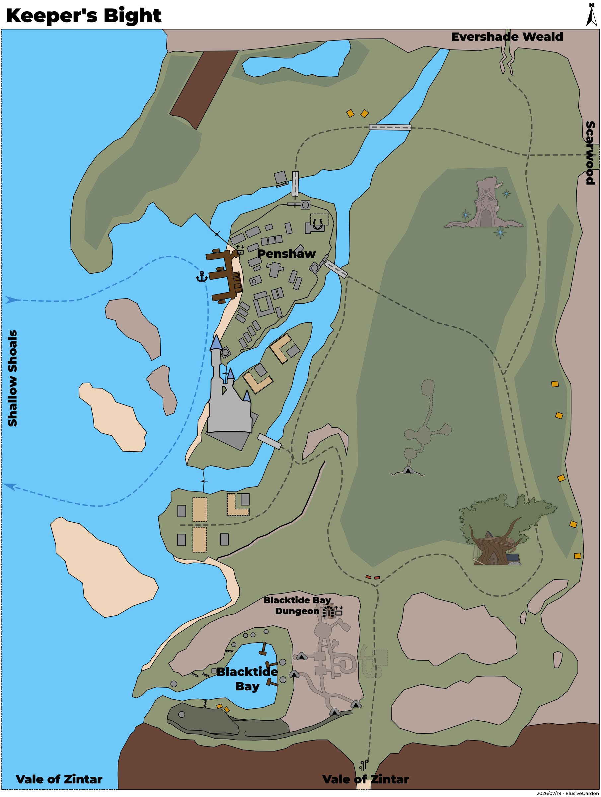
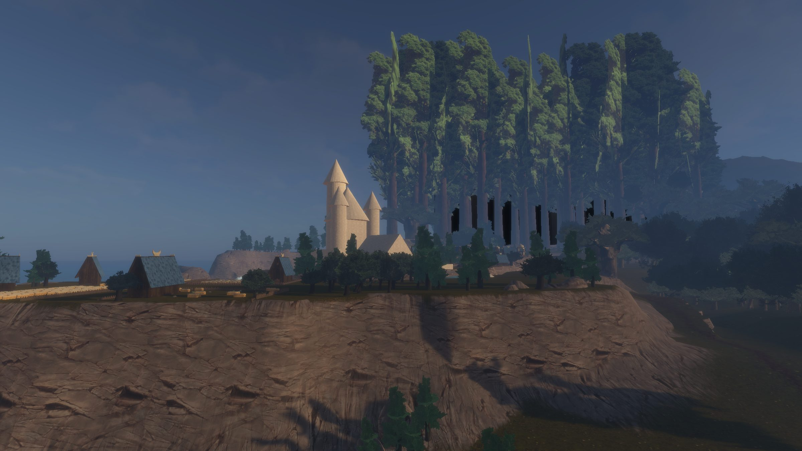

Keeper's Bight
Keeper's Bight is a coastal temperate forest plateau centrally located on Aêthoril's Western Coast in the Calafrey region. Transitioning from low coastal desert in the South to high forest plateau in the North. Penshaw, under the control of the Red Mantle, provides the region port access with popular shipping routes to Zaedin's Landing and ultimately Night Harbor. To the North is Evershade Weald, to the East is Scarwood, to the South is Vale of Zintar, to the West is Shallow Shoals. The Blacktide Orcs have a dominant foothold in the South while trapping and hunting are common throughout the thick forest plateau.
Map


Named mobs
Mobs & NPCs (camps by level)
Rows with a level are huntable camps; rows without are usually town NPCs or not yet documented.
| Name | Lvl | Race | Class | Where | Notes |
|---|---|---|---|---|---|
| a wasp drone wiki | 1 | Wasp | - | Spawns all over Evershade Weald. | Royal Jelly |
| a timber wolf wiki | ~7-8 | Wolf | - | By Evershade Weald | Damaged Canine Ear, Low-Quality Wolf Pelt, Raw Wolf Meat |
| a wasp scout wiki | 7-9 | Wasp | - | Roams the northern area of Keeper's Bight. | |
| a bight asp wiki | ~8-9 | Snake | - | By Evershade Weald | |
| a wasp worker wiki | 9-10 | Wasp | - | - | Royal Jelly |
| a willowisp wiki | 9 | Wisp | - | - | Only at night |
| a black bear wiki | 10-12 | Bear | - | By Evershade Weald | |
| a forest whelp wiki | 10-11 | Drake | - | By Evershade Weald | |
| an aggressive black bear wiki | ~10 | Bear | - | By Evershade Weald | Blood-Soaked Bear Claw, Poacher's Arrow, Rotten Bear Paw |
| a deadwood recluse wiki | 11-14 | Spider | Fighter | Spider Log | |
| a shadow wolf wiki | 12-15 | Wolf | Fighter | By Evershade Weald | |
| a black serpent wiki | 15+ | Snake | Fighter | Wanders Keeper's Bight just beyond the crossroads from Evershade Weald toward the poacher camps. | |
| a deadwood matriarch wiki | 16 | Spider | Fighter | Spider Log | Bundle of Strong Silk |
| an elder black bear wiki | 16 | Bear | Fighter | Wanders Keeper's Bight just beyond the crossroads from Evershade Weald toward the poacher camps, and between the Ranger camp and Penshaw Village | |
| a Sangrel arcanist wiki | 18-22 | Human | - | - | Sangrel Ring of the Arcanist |
| a Sangrel entangler wiki | 18-22 | Human | - | - | Sangrel Ring of the Entangler |
| a Sangrel grappler wiki | 18-22 | Human | - | - | Sangrel Ring of the Grappler |
| a Sangrel hunter wiki | 18-22 | Human | - | - | Sangrel Ring of the Hunter |
| a Sangrel shadowblade wiki | 18-22 | Human | - | - | Sangrel Ring of the Shadowblade |
| a Sangrel striker wiki | 18-22 | Human | - | - | Sangrel Ring of the Striker |
| a forest stalker wiki | 21 | Wolf | - | - | |
| a Blacktide acolyte wiki | 23-24 | Orc | - | - | |
| a Blacktide bowman wiki | 23-24 | Orc | - | - | |
| a Blacktide chef wiki | 23-24 | Orc | - | - | |
| a Blacktide guard wiki | 23-24 | Orc | - | - | |
| a Blacktide raider wiki | 23-24 | Orc | Fighter | - | |
| a Blacktide seer wiki | 23-25 | Orc | - | - | |
| a Blacktide slaver wiki | 23-25 | Orc | - | - | |
| a Blacktide tracker wiki | 23-24 | Orc | - | - | |
| a Blacktide warmage wiki | 23-24 | Orc | Elementalist | - | |
| a black wolf alpha wiki | 23-25 | Wolf | - | - | |
| a Blacktide cleric wiki | 24-25 | Orc | Cleric | - | |
| a Blacktide brute wiki | 25 | Orc | - | - | |
| a Bloodchain overseer wiki | 25 | Orc | Enchanter | - | |
| a chasm drake wiki | 25-27 | Drake | - | Keeper's Bight in the chasm between Vale of Zintar and the Tree House | Pristine Drake Fang, Glimmering Drake Scale, Drake Claw, Drake Fang, Drake Scale |
| an enslaved dwarf wiki | 25 | Dwarf | - | In the orc cave, just outside the lifts to Blacktide Bay. | |
| an enslaved elf wiki | 25 | Wood Elf | - | In the orc cave. | |
| an enslaved gnome wiki | 25 | Gnome | - | In the orc cave. | |
| an enslaved human wiki | 25 | Human | - | In the orc cave. | |
| a coolwater basilisk wiki | 26–28 | Basilisk | - | On the beach, by the Orc towers in the southern section of Keeper's Bight. | |
| a poacher wiki | ~28-30 | Human | - | - | |
| a poacher bruiser wiki | 28-30 | Human | - | Poacher Camp, Bear Cave | Poacher's Skinner |
| a poacher herbalist wiki | 28-30 | Human | - | Poacher Camp | Poacher's Skinner |
| a poacher pathfinder wiki | 28-30 | Human | - | Poacher Camp, Bear Cave | Poacher's Skinner |
| a Red Mantle inquisitor wiki | ~40 | Human | - | Village of Penshaw | |
| Dubar Falshim wiki | 42 | Human | Warrior | Village of Penshaw - Wanders around | |
| a hill giant bandit wiki | 43?? | Giant | Druid, Fighter | Giant Camp near Vale of Zintar | |
| Faelar Thistlebrook | ~45+ | Wood Elf | - | Merchant Camp | Shady Merchant |
| Ormi Brassfist wiki | ~45+ | Gnome | - | Merchant Camp | |
| Krelvya Drynn wiki | 60 | Human | - | Village of Penshaw | |
| A Blacktide soothsayer wiki | |||||
| A Blacktide warmonger wiki | |||||
| A forest drake wiki | |||||
| A grizzly bear wiki | |||||
| A waning spirit wiki | Wisp | Around the Wisp Stump | Lightstone, Greater Lightstone, Burnt-Out Lightstone, Wisp Dust | ||
| A zealot wiki | |||||
| Alysse Selegrass wiki | - | Wood Elf | - | Hanging Garden Inn Treehouse | Merchant |
| Aragon Brythe wiki | - | Human | - | In the church, South of Village of Penshaw | |
| Brenna McMiller wiki | - | Human | - | Farms, south of Penshaw | |
| Brother Gurrom wiki | - | Ogre | - | Lumberjack camp | |
| Brother Juro wiki | - | Ogre | - | Lumberjack camp | |
| Calen McMiller wiki | - | Human | - | Farms, south of Penshaw | |
| Captain Hale wiki | - | Human | - | Village of Penshaw - Docks | Quest giver |
| Customs Agent Priorton wiki | - | Human | - | Village of Penshaw - Docks | |
| Cyra Brinewell wiki | - | Human | - | Village of Penshaw - The Salty Fish (docks) | Merchant |
| Detective Brunsworth wiki | - | Human | Fighter | Village of Penshaw - Red Mantle Barracks | Quest NPC |
| Felgin Ironwhisker wiki | - | Dwarf | - | Hanging Garden Inn Treehouse | |
| Fendris the Forsaken wiki | - | Ghost | - | Bear Cave | Quest Mob |
| Garrick Harlow wiki | - | Human | - | Farms, south of Penshaw | |
| Guard Ashbriar wiki | - | Wood Elf | - | Paths between Wood Elf camp and Evershade Weald | |
| Guard Elthir wiki | - | Wood Elf | - | Bridge at Wood Elf camp | |
| Guard Irilis wiki | - | Wood Elf | - | By Evershade Weald entrance | |
| Guard Serelyth wiki | - | Wood Elf | - | Bridge at Wood Elf camp | |
| Guard Thariel wiki | - | Wood Elf | - | Bridge at Wood Elf camp | |
| Guard Vaelisra wiki | - | Wood Elf | - | Bridge at Wood Elf camp | |
| Guard Velbloom wiki | - | Wood Elf | - | By Evershade Weald entrance | |
| Harbormaster Greywake wiki | - | Human | - | Village of Penshaw - Docks | |
| Harold Abegg | - | Human | - | Village of Penshaw - Mossy Brook Inn | Merchant |
| Hazel wiki | - | Horse | - | Farms, south of Penshaw | |
| Heather wiki | - | Horse | - | Farms, south of Penshaw | |
| Hendrick Valbreken wiki | - | Human | - | Village of Penshaw - Timberwolf Trading Co. | Merchant |
| Lloyd Matthias wiki | - | Human | - | Hanging Garden Inn Treehouse | Merchant |
| Mira Harlow wiki | - | Human | - | Farms, south of Penshaw | |
| Otto Roth wiki | - | Human | - | Village of Penshaw - The Wheelhouse Tavern | Merchant |
| Ranger Rylin wiki | - | Wood Elf | - | Hanging Garden Inn Treehouse | Quest Giver |
| Ranger Valegazer wiki | - | Wood Elf | - | Wood Elf camp | |
| Reeve Thurston Winter wiki | - | Human | Fighter | Village of Penshaw - Red Mantle Barracks | Quest giver |
| Scout Amberweald wiki | - | Wood Elf | - | Wood Elf camp | |
| Scout Nightsparrow wiki | - | Wood Elf | - | Wood Elf camp | |
| Scout Skybranch wiki | - | Wood Elf | - | Wood Elf Camp | |
| Skree wiki | - | Drake | - | Hanging Garden Inn Treehouse | Alysse Selegrass' pet |
| Sybille Abegg | - | Human | - | Village of Penshaw - Mossy Brook Inn | Merchant |
| Tessa Kentwell wiki | - | Human | - | Village of Penshaw - Kentwell Tannery | Merchant |
| Tolrad Oarsen | - | Human | - | Village of Penshaw - Docks | |
| Tracker Baumery wiki | - | Human | - | Village of Penshaw - The Wheelhouse Tavern | |
| a Calafreyan captain wiki | - | Skeleton | - | ruins along the western coast of Keeper's Bight. North of the village of Penshaw, before the large Sangrel camps. | Spawns at night |
| a Red Mantle escort wiki | - | Human | - | In Keeper's Bight - Spawns at 6am at the base of the ramp of the Hanging Garden Inn Tree house. He Roams the path in Keeper's Bight, escorting the Iron Emissaries envoy. They walk from the Tree house area up the eastern path. | |
| a Red Mantle guard wiki | - | Human | - | Village of Penshaw | |
| a Red Mantle recruit wiki | - | Human | - | Village of Penshaw | |
| a Red Mantle sergeant wiki | - | Human | - | Village of Penshaw | |
| a Timberwolf lumberjak wiki | - | Human | - | Lumberjack camp | |
| a bear cub wiki | - | Bear | - | Bear Cave | |
| a black wolf wiki | - | Wolf | - | - | |
| a boulder viper wiki | - | Snake | Fighter | Wanders South Eastern Keeper's Bight in the canyons, by Vale of Zintar zone line | |
| a brittle elven theurgist wiki | - | Skeleton | - | ruins along the western coast of Keeper's Bight. North of the village of Penshaw, before the large Sangrel camps. | |
| a brown wolf wiki | - | Wolf | - | - | |
| a canyon stalker wiki | - | Wolf | - | Wanders South Eastern Keeper's Bight in the canyons, by Vale of Zintar zone line | |
| a cave bear wiki | - | Bear | - | Bear Cave | Torn Leather Bracer |
| a crumbling elven curate wiki | - | Skeleton | Cleric | ruins along the western coast of Keeper's Bight. North of the village of Penshaw, before the large Sangrel camps. | |
| a den matriarch wiki | - | Bear | - | Bear Cave | |
| a dock registrar wiki | - | Human | - | Village of Penshaw - Docks | |
| a dockhand wiki | - | Human | - | Village of Penshaw - Docks | |
| a farmhand wiki | - | Human | - | Farms, south of Penshaw | |
| a fat cave bear wiki | - | Bear | - | Bear Cave | |
| a fisherman wiki | - | Human | - | Village of Penshaw - Docks | |
| a fisherwoman wiki | - | Human | - | Village of Penshaw - Docks | |
| a fishmonger wiki | - | Human | - | Village of Penshaw - Docks | |
| a forest drakeling wiki | - | Drake | - | Wanders Keeper's Bight just beyond the crossroads from Evershade Weald toward the poacher camps. | |
| a great bight shark wiki | - | Shark | - | - | |
| a reanimated elven archer wiki | - | Skeleton | - | ruins along the western coast of Keeper's Bight. North of the village of Penshaw, before the large Sangrel camps. | |
| a scribe of Tilustra wiki | - | Human | Fighter | In the church, South of Village of Penshaw | |
| a shady farmer wiki | - | Human | - | Farms, south of Penshaw | Sangrel Rite II, Sangrel Ring of the Striker, Sangrel Ring of the Grappler |
| a stablemaster | - | Human | - | Hanging Garden Inn Treehouse | Stable Master |
| a waining spirit | - | Wisp | - | - | |
| a warehouse clerk wiki | - | Human | - | Village of Penshaw - Docks | |
| a wood elf scout wiki | - | Wood Elf | - | Wood Elf camp | |
| a wood elf warden wiki | - | Wood Elf | - | Wood Elf camp | |
| a woodworker | - | Human | - | Lumberjack camp | Merchant |
| an Iron Emissaries envoy wiki | - | Human | - | Spawns at 6am at the base of the ramp of the Hanging Garden Inn Tree house. He Roams the path in Keeper's Bight, being escorted by Red Mantle escort guards. They walk from the Tree house area up the eastern path. | Bloodied Merchant Ledger |
| an amber hornet wiki | - | Wasp | - | Wood Elf camp | Ranger Valegazer's pet |
| an ancient elven fighter wiki | - | Skeleton | - | ruins along the western coast of Keeper's Bight. North of the village of Penshaw, before the large Sangrel camps. | |
| an ancient elven skeleton wiki | - | Skeleton | - | - | |
| an exhausted Red Mantle guard wiki | - | Human | - | Village of Penshaw - The Wheelhouse Tavern | |
| an off-duty Red Mantle guard wiki | - | Human | - | Village of Penshaw - The Wheelhouse Tavern | |
| an undead poacher wiki | - | Skeleton | - | Bear Cave | Quest Mob |
Quests
| Quest | Reward | Giver | Min lvl |
|---|---|---|---|
| Growing Threat of the Sangrel Fist | Sigil of Inquiry, Sigil of Honor | Reeve Thurston Winter | - |
| Hale's Haul | Experience, Coin | Captain Hale | 1 |
| Left Behind | Debtcarver | Poacher Tolan | - 28 |
| Left Behind | Leggings of Reckoning | Poacher Garrus | - 28 |
| Left Behind | Boots of Vengeful Resolve | Poacher Garrus | - 28 |
| Left Behind | Vest of Shattered Duty | Poacher Garrus , Poacher Tolan | - 28 |
| Poacher's Knives | High Keeper's Vambrace | Ranger Rylin | - 28 |
| Wilna's Ring | Ring of Consequences | Poacher Wilna | - 28 |
Gear that drops here
| Slot | Item | Key stats (wiki) | How to get | Lvl | Classes |
|---|---|---|---|---|---|
| Blood-Soaked Bear Claw | no stats listed on wiki | Quest: Beastmaster Starter Quest (Faelindral) (Faelindral, min lvl 1) Drop: an aggressive black bear (lvl ~10) — Keeper's Bight, By Evershade Weald | 1 | class unconfirmed | |
| Bone Chips | no stats listed on wiki | Quest: Bone Chips for Moon Dances (Moon Dances, Faelindral, min lvl 1) Quest: Bone Chips for Squire Ryland (Squire Ryland, Night Harbor, min lvl 1) Quest: Druid Starter Quest (Faelindral) (Sylvarya Starveil, Faelindral, min lvl 1) Quest: Find Delilah's Pet (Delilah, Underdocks, min lvl 1) | 1 | NEC SHD | |
| Cloth Scraps | no stats listed on wiki | Quest: Cloth Scraps Quest (a shifty gnome, Night Harbor, min lvl 1) Drop: a decayed skeleton (lvl 2-3) — Ail'Vorith, - Drop: a Deepgulp berserker (lvl 12-13) — Ail'Vorith, - Drop: a Deepgulp hunter (lvl 10-11) — Ail'Vorith, - | 1 | class unconfirmed | |
| Primary, Secondary | Cracked Staff | DMG 6 / DLY 33 | Drop: a Deepgulp hunter (lvl 10-11) — Ail'Vorith, - Drop: a Deepgulp shaman (lvl unconfirmed) — Ail'Vorith Drop: a skeleton (lvl 6-7) — Ail'Vorith, - Drop: a charred acolyte (lvl 13) — Ancient Crypt, - | 1 | All classes |
| Crude Spider Silk | no stats listed on wiki | Quest: Laundry Day Quest (a wash maiden, Night Harbor, min lvl 1) Drop: a black widow hatchling (lvl 2-3) — Evershade Weald, - Drop: a black widow (lvl 4-5) — Evershade Weald, - Drop: an elder widow (lvl 7-8) — Evershade Weald, - | 1 | class unconfirmed | |
| Damaged Canine Ear | no stats listed on wiki | Drop: a black wolf pup (lvl 1) — Evershade Weald, - Drop: a timber wolf (lvl ~7-8) — Keeper's Bight, By Evershade Weald | 1 | class unconfirmed | |
| Low-Quality Wolf Pelt | no stats listed on wiki | Drop: a shadow wolf (lvl -) — Keeper's Bight, By Evershade Weald Drop: a forest stalker (lvl -) — Keeper's Bight, - Named drop: Timberfang (lvl 20-25?) — Keeper's Bight, Lower Cliffs Drop: a canyon stalker (lvl -) — Keeper's Bight, - | 1 | class unconfirmed | |
| Medium-Quality Wolf Pelt | no stats listed on wiki | Drop: a canyon stalker (lvl -) — Keeper's Bight, - Drop: a forest stalker (lvl -) — Keeper's Bight, - Drop: a dismal cur (lvl unconfirmed) — Sungreet Strand Drop: a dire wolf patroller (lvl 29) — Vale of Zintar, Orc Cave | 1 | class unconfirmed | |
| Primary, Secondary | Poacher's Skinner | DMG 6 / DLY 23 | Quest: Poacher's Knives (Ranger Rylin, Keeper's Bight, min lvl 1) Drop: a poacher (lvl ~28-30) — Keeper's Bight, - Named drop: Poacher Tolan (lvl >35) — Keeper's Bight, Poacher Camp Drop: a poacher pathfinder (lvl 28-30) — Keeper's Bight, Poacher Camp, Bear Cave | 1 | ARC BRD BST ELE ENC FTR RNG ROG SHD SHM SPB WIZ |
| Ammo | Poacher's Arrow | DMG 0 / DLY 0 | Quest: Beastmaster Starter Quest (Faelindral) (Faelindral, min lvl 1) Quest: Evershade Weald Drop: an aggressive black bear (lvl ~10) — Keeper's Bight, By Evershade Weald Drop: an aggressive black bear (lvl ~10) — Keeper's Bight, By Evershade Weald | 1 | class unconfirmed |
| Raw Wolf Meat | no stats listed on wiki | Drop: a trained wolf (lvl unconfirmed) — Blacktide Bay Drop: a patrolling wolf (lvl unconfirmed) — Blacktide Bay Drop: a shadow wolf (lvl -) — Keeper's Bight, By Evershade Weald Drop: a timber wolf (lvl ~7-8) — Keeper's Bight, By Evershade Weald | 1 | class unconfirmed | |
| Primary, Secondary | Rusty Axe | DMG 6 / DLY 42 | Drop: A skeletal warrior (lvl 4 - 11) — Tomb of the Last Wyrmsbane, - Drop: A skeletal cleric (lvl -) — Tomb of the Last Wyrmsbane, - Drop: A skeletal fighter (lvl 3 - 10) — Tomb of the Last Wyrmsbane, - Drop: a skeletal priest (lvl -) — Tomb of the Last Wyrmsbane, - | 1 | BST FTR INQ PAL RNG SHD SPB |
| Primary | Rusty Battle Axe | DMG 10 / DLY 54 | Drop: A rotting skeleton (lvl 1) — Night Harbor, Noob Yard Drop: an ashira warrior (lvl -) — Night Harbor, Noob Yard Drop: A skeletal warrior (lvl 4 - 11) — Tomb of the Last Wyrmsbane, - Drop: a skeletal deacon (lvl -) — Tomb of the Last Wyrmsbane, - | 1 | BST FTR INQ PAL SHD |
| Primary, Secondary | Rusty Dagger | DMG 4 / DLY 24 | Vendor: A scrap dealer — Evershade Weald; A used weapons dealer — Night Harbor, Shallow Shoals; Evershade Weald Drop: an ashira warrior (lvl 6-7) — Sungreet Strand, - Drop: a Bloodynose quarreler (lvl ~8-10) — Sungreet Strand, Tel Ekir Goblin Entrance Drop: a sullen farmhand (lvl unconfirmed) — Sungreet Strand | 1 | ARC BRD BST ELE ENC FTR INQ NEC RNG ROG SHD SHM SPB WIZ |
| Primary | Rusty Great Scythe | DMG 8 / DLY 46 | Drop: A rotting skeleton (lvl 1) — Night Harbor, Noob Yard Drop: a market peddler (lvl unconfirmed) — Night Harbor Drop: A skeletal warrior (lvl 4 - 11) — Tomb of the Last Wyrmsbane, - Drop: a skeletal monk (lvl -) — Tomb of the Last Wyrmsbane, - | 1 | BST DRU FTR INQ NEC RNG SHD SPB |
| Primary | Rusty Greatsword | DMG 9 / DLY 50 | Drop: a skeleton (lvl 4-6) — Shaded Dunes Named drop: a stumbling zombie (lvl 8) — Shaded Dunes, West end of Shaded Dunes Drop: a bandit (lvl 10-13) — Shaded Dunes, - Named drop: a smuggler (lvl unconfirmed) — Shaded Dunes | 1 | ARC BRD BST FTR INQ PAL RNG SHD SPB |
| Primary, Secondary | Rusty Scimitar | DMG 5 / DLY 36 | Drop: A rotting skeleton (lvl 1) — Night Harbor, Noob Yard Drop: a goblin troublemaker (lvl 9) — Night Harbor, Docks Named drop: a stumbling zombie (lvl 8) — Shaded Dunes, West end of Shaded Dunes Drop: a skeleton (lvl 4-6) — Shaded Dunes | 1 | ARC BRD BST DRU FTR INQ PAL RNG ROG SHD SPB WIZ |
| Primary, Secondary | Rusty Mace | DMG 6 / DLY 40 | Vendor: A scrap dealer — Evershade Weald; A used weapons dealer — Night Harbor, Shallow Shoals; Evershade Weald Drop: an ashira lookout (lvl -) — Sungreet Strand, - Drop: an ashira shaman (lvl -) — Sungreet Strand, - Drop: a Bloodynose quarreler (lvl ~8-10) — Sungreet Strand, Tel Ekir Goblin Entrance | 1 | BRD BST CLR DRU FTR INQ MNK PAL RNG ROG SHD SHM SPB |
| Primary | Rusty Maul | DMG 10 / DLY 52 | Drop: A skeletal cavalier (lvl 6 - 10) — Tomb of the Last Wyrmsbane, - Drop: A skeletal fighter (lvl 3 - 10) — Tomb of the Last Wyrmsbane, - Drop: a skeletal deacon (lvl -) — Tomb of the Last Wyrmsbane, - Drop: a skeletal warrior (lvl 4 - 11) — Tomb of the Last Wyrmsbane, - | 1 | BRD BST CLR DRU FTR INQ MNK PAL RNG ROG SHD SHM SPB |
| Primary, Secondary | Rusty Scythe | DMG 4 / DLY 28 | Drop: a skeleton (lvl 4-6) — Shaded Dunes Drop: a bandit (lvl 10-13) — Shaded Dunes, - Drop: an ashira warrior (lvl -) — Shaded Dunes, - Named drop: a wererat (lvl unconfirmed) — Shaded Dunes, They spawn at night in the smugglers camp, in place of the smugglers. | 1 | BST DRU FTR INQ NEC RNG SHD SPB |
| Primary, Secondary | Rusty Spear | DMG 5 / DLY 34 | Vendor: A scrap dealer — Evershade Weald; Evershade Weald; a scrap dealer Drop: an ashira warrior (lvl 6-7) — Sungreet Strand, - Drop: an ashira lookout (lvl -) — Sungreet Strand, - Named drop: a rotting skeleton (lvl 1) — Sungreet Strand, Spawns along road in newbie area. | 1 | ARC BRD BST FTR INQ RNG ROG SHD SHM |
| Secondary | Rusty Kite Shield | AC 3 | Drop: a skeletal researcher (lvl ~14-15) — Ancient Crypt, - Drop: a skeletal guard (lvl ~12-15) — Ancient Crypt, - Drop: a ghoulish scholar (lvl ~14-15) — Ancient Crypt, - Drop: a Fellstone defiler (lvl unconfirmed) — Blacktide Bay | 1 | BRD CLR FTR INQ PAL RNG SHD |
| Primary | Rusty Long Spear | DMG 9 / DLY 48 | Drop: an ashira warrior (lvl 6-7) — Sungreet Strand, - Drop: a Bloodynose quarreler (lvl ~8-10) — Sungreet Strand, Tel Ekir Goblin Entrance Drop: an ashira lookout (lvl -) — Sungreet Strand, - Drop: an ashira shaman (lvl -) — Sungreet Strand, - | 1 | ARC BRD BST FTR INQ RNG ROG SHD SHM |
| Primary, Secondary | Rusty Longsword | DMG 6 / DLY 38 | Drop: an ashira shaman (lvl -) — Sungreet Strand, - Drop: an ashira warrior (lvl 6-7) — Sungreet Strand, - Drop: a Bloodynose quarreler (lvl ~8-10) — Sungreet Strand, Tel Ekir Goblin Entrance Drop: an ashira lookout (lvl -) — Sungreet Strand, - | 1 | ARC BRD BST FTR INQ PAL RNG ROG SHD SPB WIZ |
| Primary, Secondary | Rusty Shortsword | DMG 4 / DLY 26 | Vendor: A scrap dealer — Evershade Weald; A used weapons dealer — Night Harbor, Shallow Shoals; Evershade Weald Drop: an ashira warrior (lvl 6-7) — Sungreet Strand, - Drop: an ashira lookout (lvl -) — Sungreet Strand, - Drop: a hired thug (lvl 9-10) — Sungreet Strand, Ameen Farm | 1 | ARC BRD BST FTR INQ PAL RNG ROG SHD SHM SPB WIZ |
| Primary, Secondary | Rusty Trident | DMG 5 / DLY 32 | Drop: an ashira lookout (lvl -) — Sungreet Strand, - Drop: an ashira warrior (lvl 6-7) — Sungreet Strand, - Drop: a Bloodynose quarreler (lvl ~8-10) — Sungreet Strand, Tel Ekir Goblin Entrance Drop: an ashira shaman (lvl -) — Sungreet Strand, - | 1 | ARC BRD BST FTR INQ RNG ROG SHD SHM |
| Secondary | Rusty Tower Shield | AC 4 | Drop: an ashira lookout (lvl -) — Sungreet Strand, - Drop: a Bloodynose quarreler (lvl ~8-10) — Sungreet Strand, Tel Ekir Goblin Entrance Drop: an ashira warrior (lvl 6-7) — Sungreet Strand, - Drop: a Bloodynose fumer (lvl ~8-10) — Sungreet Strand, Tel Ekir Goblin Entrance | 1 | FTR INQ PAL SHD |
| Primary | Rusty War Lance | DMG 9 / DLY 48 | Drop: an ashira warrior (lvl 6-7) — Sungreet Strand, - Drop: a hired thug (lvl 9-10) — Sungreet Strand, Ameen Farm Named drop: a rotting skeleton (lvl 1) — Sungreet Strand, Spawns along road in newbie area. Drop: an ashira lookout (lvl -) — Sungreet Strand, - | 1 | FTR INQ PAL SHD |
| Snake Fang | no stats listed on wiki | Quest: Fighter Starter Quest (Night Harbor) (-, Night Harbor, min lvl 1) Quest: Night Harbor Drop: a rattlesnake (lvl unconfirmed) — Night Harbor Drop: a snake (lvl unconfirmed) — Night Harbor, Newbie yards and various spots within the zones. | 1 | class unconfirmed | |
| Snake Egg | no stats listed on wiki | Quest: Night Harbor Quest: Pests at the Farm (Farmer Ammar, Night Harbor, min lvl 1) Drop: a rattlesnake (lvl unconfirmed) — Night Harbor Drop: a snake (lvl unconfirmed) — Night Harbor, Newbie yards and various spots within the zones. | 1 | class unconfirmed | |
| Neck | Tattered Cloth Gorget | AC 1 | Drop: A rotting skeleton (lvl 1) — Night Harbor, Noob Yard Drop: a goblin drunk (lvl -) — Night Harbor, Docks Drop: a goblin troublemaker (lvl 9) — Night Harbor, Docks Drop: a goblin squatter (lvl 10) — Night Harbor, Docks | 1 | All classes |
| Hands | Tattered Cloth Gloves | AC 1 | Drop: A rotting skeleton (lvl 1) — Night Harbor, Noob Yard Drop: a begrudging farmer (lvl unconfirmed) — Night Harbor Drop: a stumbling skeleton (lvl 14) — Night Harbor, Crypt (Night) Drop: a goblin drunk (lvl -) — Night Harbor, Docks | 1 | All classes |
| Waist | Tattered Cloth Belt | AC 1 | Drop: A rotting skeleton (lvl 1) — Night Harbor, Noob Yard Drop: a cackling skeleton (lvl 15) — Night Harbor, Crypt (Night) Drop: a goblin troublemaker (lvl 9) — Night Harbor, Docks Drop: an ashira scout (lvl 2) — Night Harbor, Noob Yard | 1 | All classes |
| Legs | Tattered Cloth Pantaloons | AC 1 | Drop: a decayed skeleton (lvl 2-3) — Ail'Vorith, - Drop: a ghoulish scholar (lvl ~14-15) — Ancient Crypt, - Drop: a skeletal adept (lvl ~13-14) — Ancient Crypt, - Drop: a skeletal guard (lvl ~12-15) — Ancient Crypt, - | 1 | All classes |
| Feet | Tattered Cloth Boots | AC 1 | Drop: A rotting skeleton (lvl 1) — Night Harbor, Noob Yard Drop: an ashira scout (lvl 2) — Night Harbor, Noob Yard Drop: a goblin drunk (lvl -) — Night Harbor, Docks Drop: a goblin squatter (lvl 10) — Night Harbor, Docks | 1 | All classes |
| Chest | Tattered Cloth Robe | AC 2 | Drop: A rotting skeleton (lvl 1) — Night Harbor, Noob Yard Drop: a cackling skeleton (lvl 15) — Night Harbor, Crypt (Night) Drop: a goblin squatter (lvl 10) — Night Harbor, Docks Drop: a goblin gambler (lvl -) — Night Harbor, Docks | 1 | ELE ENC NEC WIZ |
| Back | Tattered Cloth Cape | AC 1 | Drop: A rotting skeleton (lvl 1) — Night Harbor, Noob Yard Drop: a risen skeleton (lvl 13) — Night Harbor, Crypt (Night) Drop: a cackling skeleton (lvl 15) — Night Harbor, Crypt (Night) Drop: a goblin drunk (lvl -) — Night Harbor, Docks | 1 | All classes |
| Wrist | Tattered Cloth Bracer | AC 1 | Drop: A skeletal fighter (lvl 3 - 10) — Tomb of the Last Wyrmsbane, - Drop: A skeletal warrior (lvl 4 - 11) — Tomb of the Last Wyrmsbane, - Drop: A skeletal cleric (lvl -) — Tomb of the Last Wyrmsbane, - Drop: A skeletal knight (lvl -) — Tomb of the Last Wyrmsbane, - | 1 | All classes |
| Head | Tattered Cloth Cap | AC 1 | Drop: A rotting skeleton (lvl 1) — Night Harbor, Noob Yard Drop: a goblin squatter (lvl 10) — Night Harbor, Docks Drop: a goblin troublemaker (lvl 9) — Night Harbor, Docks Drop: a goblin drunk (lvl -) — Night Harbor, Docks | 1 | All classes |
| Chest | Tattered Cloth Tunic | AC 2 | Drop: A skeletal cleric (lvl -) — Tomb of the Last Wyrmsbane, - Drop: A skeletal fighter (lvl 3 - 10) — Tomb of the Last Wyrmsbane, - Drop: A skeletal warrior (lvl 4 - 11) — Tomb of the Last Wyrmsbane, - Drop: A skeletal priest (lvl -) — Tomb of the Last Wyrmsbane, - | 1 | All classes |
| Shirt | Tattered Cloth Shirt | no stats listed on wiki | Drop: A rotting skeleton (lvl 1) — Night Harbor, Noob Yard Drop: a stumbling skeleton (lvl 14) — Night Harbor, Crypt (Night) Drop: a cackling skeleton (lvl 15) — Night Harbor, Crypt (Night) Drop: a goblin troublemaker (lvl 9) — Night Harbor, Docks | 1 | All classes |
| Primary, Secondary | Torch | Effect: Torch (Passive. Must Equip. Level: 1) | Quest: Pests at the Farm (Farmer Ammar, Night Harbor, min lvl 1) Vendor: A goods merchant — Night Harbor, Shallow Shoals; A greedy halfling — Night Harbor; A shifty elf — Evershade Weald Crafted: Survival (trivial X) Drop: A rotting skeleton (lvl 1) — Night Harbor, Noob Yard | 1 | All classes |
| Wasp Wing | no stats listed on wiki | Drop: a wasp drone (lvl 1) — Evershade Weald, - Named drop: a wasp worker (lvl 3-4) — Evershade Weald Drop: a wasp drone (lvl -) — Keeper's Bight, - Drop: a wasp scout (lvl 7-9) — Keeper's Bight, - | 1 | DRU ENC RNG SHM WIZ | |
| Wasp Venom Sac | no stats listed on wiki | Drop: a wasp drone (lvl 1) — Evershade Weald, - Named drop: a wasp worker (lvl 3-4) — Evershade Weald Drop: a wasp drone (lvl -) — Keeper's Bight, - Drop: A wasp scout (lvl 7-9) — Keeper's Bight, - | 1 | class unconfirmed | |
| Secondary | Worn Buckler | AC 2 | Drop: an ashira shaman (lvl -) — Sungreet Strand, - Drop: an ashira lookout (lvl -) — Sungreet Strand, - Drop: an ashira warrior (lvl 6-7) — Sungreet Strand, - Drop: a Bloodynose scarer (lvl ~8-10) — Sungreet Strand, Tel Ekir Goblin Entrance | 1 | BRD BST CLR DRU FTR INQ PAL RNG ROG SHD SHM SPB |
| Wolf Blood | no stats listed on wiki | Vendor: A Shady Merchant Drop: a shadow wolf (lvl -) — Keeper's Bight, By Evershade Weald Drop: a forest stalker (lvl -) — Keeper's Bight, - Drop: a canyon stalker (lvl -) — Keeper's Bight, - | 1 | class unconfirmed | |
| Wolf Tooth | no stats listed on wiki | Drop: a shadow wolf (lvl -) — Keeper's Bight, By Evershade Weald Drop: A beguiled wolf (lvl unconfirmed) — Keeper's Bight Drop: a forest stalker (lvl -) — Keeper's Bight, - Drop: a canyon stalker (lvl -) — Keeper's Bight, - | 1 | class unconfirmed | |
| Primary | Worn Great Staff | DMG 10 / DLY 39 | Drop: a decayed skeleton (lvl 2-3) — Ail'Vorith, - Drop: a decrepit ghoul (lvl -) — Ancient Crypt, - Drop: a skeletal guard (lvl ~12-15) — Ancient Crypt, - Drop: a Fellstone guard (lvl unconfirmed) — Blacktide Bay | 1 | BST CLR DRU ELE ENC FTR MNK NEC PAL SHM SPB WIZ |
| Bell Pepper | no stats listed on wiki | Vendor: A grocer — Night Harbor; Night Harbor; Spices Drop: an ashira lookout (lvl -) — Sungreet Strand, - Drop: an ashira shaman (lvl -) — Sungreet Strand, - Drop: an ashira warrior (lvl 6-7) — Sungreet Strand, - | 2 | class unconfirmed | |
| Cabbage | no stats listed on wiki | Vendor: Night Harbor; a grocer; a produce vendor Drop: an ashira lookout (lvl -) — Sungreet Strand, - Drop: an ashira warrior (lvl 6-7) — Sungreet Strand, - Drop: an ashira shaman (lvl -) — Sungreet Strand, - | 2 | class unconfirmed | |
| Celery | no stats listed on wiki | Vendor: A grocer — Night Harbor; A merchant traveler — Vale of Zintar; Drogo the Grocer — Faelindral Drop: a dunes madman (lvl 10) — Sungreet Strand, - Drop: an ashira lookout (lvl -) — Sungreet Strand, - Drop: an ashira warrior (lvl 6-7) — Sungreet Strand, - | 2 | class unconfirmed | |
| Cheese | no stats listed on wiki | Drop: a Deepgulp shaman (lvl unconfirmed) — Ail'Vorith Drop: a deranged convict (lvl unconfirmed) — Caves of Irem Drop: a river bandit (lvl -) — Caves of Irem, - Drop: a fossergrim watcher (lvl 9-11) — Evershade Weald, - | 2 | class unconfirmed | |
| Garlic | no stats listed on wiki | Vendor: Night Harbor; a cook Drop: an ashira warrior (lvl 6-7) — Sungreet Strand, - Drop: an ashira shaman (lvl -) — Sungreet Strand, - Drop: a sullen farmhand (lvl unconfirmed) — Sungreet Strand | 2 | class unconfirmed | |
| Lemon | no stats listed on wiki | Vendor: A grocer — Night Harbor; A merchant traveler — Vale of Zintar; Drogo the Grocer — Faelindral Drop: an ashira lookout (lvl -) — Sungreet Strand, - Drop: an ashira warrior (lvl 6-7) — Sungreet Strand, - Drop: an ashira shaman (lvl -) — Sungreet Strand, - | 2 | class unconfirmed | |
| Mushroom | no stats listed on wiki | Drop: a cutthroat (lvl -) — Caves of Irem, - Drop: a river bandit (lvl -) — Caves of Irem, - Drop: a ruffian (lvl -) — Caves of Irem, - Drop: a vagrant (lvl -) — Caves of Irem, - | 2 | class unconfirmed | |
| Spider Silk | no stats listed on wiki | Drop: a gloom widow (lvl 9-11) — Blacktide Bay, - Drop: a stream fisher (lvl -) — Blacktide Bay, - Drop: a black widow hatchling (lvl unconfirmed) — Faelindral Drop: A cobweaver hatchling (lvl -) — Night Harbor, Abandoned Boatwright's House | 2 | class unconfirmed | |
| Spider Legs | no stats listed on wiki | Drop: a black widow hatchling (lvl 2-3) — Evershade Weald, - Drop: a black widow (lvl 4-5) — Evershade Weald, - Drop: an elder widow (lvl 7-8) — Evershade Weald, - Drop: a gloom widow (lvl 9-11) — Blacktide Bay, - | 2 | class unconfirmed | |
| Spider Venom Sac | no stats listed on wiki | Drop: a spiderling (lvl 2) — Night Harbor, Noob Yard Drop: a giant spider (lvl -) — Shaded Dunes, - Drop: a spiderling (lvl 2) — Shaded Dunes, - Drop: a black widow (lvl 4-5) — Evershade Weald, - | 2 | class unconfirmed | |
| Tomato | no stats listed on wiki | Vendor: A merchant traveler — Vale of Zintar; Drogo the Grocer — Faelindral; Faelindral Drop: a cutthroat (lvl -) — Caves of Irem, - Drop: a deranged convict (lvl unconfirmed) — Caves of Irem Drop: a river bandit (lvl -) — Caves of Irem, - | 2 | class unconfirmed | |
| Carrot | no stats listed on wiki | Vendor: Vale of Zintar; a merchant traveler Drop: an ashira warrior (lvl 6-7) — Sungreet Strand, - Drop: an ashira lookout (lvl -) — Sungreet Strand, - Drop: an ashira shaman (lvl -) — Sungreet Strand, - | 3 | class unconfirmed | |
| Chipped Sapphire | no stats listed on wiki | Drop: a river bandit (lvl -) — Caves of Irem, - Drop: a ruffian (lvl -) — Caves of Irem, - Drop: a forest whelp (lvl 10-11) — Keeper's Bight, By Evershade Weald Drop: a goblin squatter (lvl 10) — Night Harbor, Docks | 3 | class unconfirmed | |
| Chipped Jade | no stats listed on wiki | Drop: a bandit (lvl 10-13) — Shaded Dunes, - Drop: Copper Vein (lvl unconfirmed) — Shaded Dunes Drop: Rich Copper Vein (lvl unconfirmed) — Shaded Dunes Named drop: a smuggler (lvl unconfirmed) — Shaded Dunes | 3 | class unconfirmed | |
| Eth-ur Geological Journal Page | no stats listed on wiki | Drop: a shadow wolf (lvl -) — Keeper's Bight, By Evershade Weald Drop: a Sangrel hunter (lvl 18-22) — Keeper's Bight, - Drop: a bloodynose schemer (lvl 13-15) — Tel Ekir, Spawns in the southeast corner of the Bloodynose hag room/camp by a firepit. Drop: a Bloodynose spooker (lvl ~13-14) — Tel Ekir, - | 3 | DRU | |
| Onion | no stats listed on wiki | Drop: an ashira warrior (lvl 6-7) — Sungreet Strand, - Drop: an ashira lookout (lvl -) — Sungreet Strand, - Drop: a grim farmhand (lvl unconfirmed) — Sungreet Strand Drop: a hired thug (lvl 9-10) — Sungreet Strand, Ameen Farm | 3 | class unconfirmed | |
| Potato | no stats listed on wiki | Drop: a Deepgulp mystic (lvl 12-13) — Ail'Vorith, - Drop: an enthralled engineer (lvl unconfirmed) — Blacktide Bay Drop: a river bandit (lvl -) — Caves of Irem, - Drop: a ruffian (lvl -) — Caves of Irem, - | 3 | class unconfirmed | |
| Raw Human Meat | no stats listed on wiki | Drop: a hired thug (lvl 9-10) — Sungreet Strand, Ameen Farm Drop: a pest summoner (lvl unconfirmed) — Sungreet Strand Drop: a smarmy hunter (lvl unconfirmed) — Sungreet Strand Named drop: a bandit (lvl 10) — Sungreet Strand | 3 | class unconfirmed | |
| Raw Dwarf Meat | no stats listed on wiki | Drop: an enslaved dwarf (lvl 25) — Keeper's Bight, - Drop: a Cossa pirate (lvl -) — Shallow Shoals, Pirate Island Drop: a grizzled aspirant (lvl unconfirmed) — Shallow Shoals, Pirate Island Drop: a drunken cleric (lvl unconfirmed) — Night Harbor | 3 | class unconfirmed | |
| Rawhide Scraps | no stats listed on wiki | Drop: a Deepgulp berserker (lvl 12-13) — Ail'Vorith, - Drop: a Deepgulp hunter (lvl 10-11) — Ail'Vorith, - Drop: a Deepgulp mystic (lvl 12-13) — Ail'Vorith, - Drop: a Deepgulp scavenger (lvl 10-11) — Ail'Vorith, - | 3 | class unconfirmed | |
| Raw Snake Meat | no stats listed on wiki | Drop: a diseased snake (lvl -) — Night Harbor, Outside the cave to Tomb of the Last Wyrmsbane Drop: a snake (lvl unconfirmed) — Night Harbor, Newbie yards and various spots within the zones. Drop: a rattlesnake (lvl unconfirmed) — Night Harbor Drop: a rattlesnake (lvl 4) — Sungreet Strand, - | 3 | class unconfirmed | |
| Raw Orc Meat | no stats listed on wiki | Drop: a Fellstone guard (lvl unconfirmed) — Blacktide Bay Drop: a Fellstone sentinel (lvl unconfirmed) — Blacktide Bay Drop: a Fellstone ragecaller (lvl 9-11) — Blacktide Bay Drop: a Fellstone corrupter (lvl unconfirmed) — Blacktide Bay | 3 | class unconfirmed | |
| Spirit World Ch. 6 | no stats listed on wiki | Drop: a cinder harvester (lvl 14-15) — Sungreet Strand, - Drop: a smarmy hunter (lvl unconfirmed) — Sungreet Strand Drop: a Fellstone sentinel (lvl unconfirmed) — Blacktide Bay Drop: a Fellstone ragecaller (lvl 9-11) — Blacktide Bay | 3 | SHM | |
| Waist | Tattered Rawhide Belt | AC 1 | Drop: A skeletal warrior (lvl 4 - 11) — Tomb of the Last Wyrmsbane, - Drop: A skeletal monk (lvl -) — Tomb of the Last Wyrmsbane, - Drop: a skeletal cleric (lvl -) — Tomb of the Last Wyrmsbane, - Drop: a risen zombie (lvl -) — Tomb of the Last Wyrmsbane, - | 3 | ARC BRD BST CLR DRU FTR INQ MNK PAL RNG ROG SHD SHM SPB |
| Back | Tattered Rawhide Cloak | AC 1 | Drop: A skeletal marksman (lvl -) — Tomb of the Last Wyrmsbane, - Drop: A skeletal warrior (lvl 4 - 11) — Tomb of the Last Wyrmsbane, - Drop: A skeletal cavalier (lvl 6 - 10) — Tomb of the Last Wyrmsbane, - Drop: A skeletal cleric (lvl -) — Tomb of the Last Wyrmsbane, - | 3 | ARC BRD BST CLR DRU FTR INQ MNK PAL RNG ROG SHD SHM SPB |
| Chest | Tattered Rawhide Tunic | AC 3 | Drop: a charred acolyte (lvl 13) — Ancient Crypt, - Named drop: a ghoulish custodian (lvl 16) — Ancient Crypt, Spawns in the library Drop: a skeletal guard (lvl ~12-15) — Ancient Crypt, - Drop: a skeletal researcher (lvl ~14-15) — Ancient Crypt, - | 3 | ARC BRD BST CLR DRU FTR INQ MNK PAL RNG ROG SHD SHM SPB |
| Legs | Tattered Rawhide Leggings | AC 2 | Drop: a Deepgulp hunter (lvl 10-11) — Ail'Vorith, - Drop: a Deepgulp warrior (lvl 10-11) — Ail'Vorith, - Drop: a skeletal guard (lvl ~12-15) — Ancient Crypt, - Drop: a Fellstone sentinel (lvl unconfirmed) — Blacktide Bay | 3 | ARC BRD BST CLR DRU FTR INQ MNK PAL RNG ROG SHD SHM SPB |
| Drake Claw | no stats listed on wiki | Drop: a green drakeling (lvl 4-5) — Evershade Weald, - Named drop: Kyros Emeraldscale (lvl 8) — Evershade Weald, across river and west of noob lift bridge Drop: a forest drakeling (lvl -) — Keeper's Bight, - Drop: a forest drake (lvl unconfirmed) — Keeper's Bight | 4 | class unconfirmed | |
| Drake Fang | no stats listed on wiki | Drop: a green drakeling (lvl 4-5) — Evershade Weald, - Named drop: Kyros Emeraldscale (lvl 8) — Evershade Weald, across river and west of noob lift bridge Drop: a dust drake sentinel (lvl unconfirmed) — Vale of Zintar, Wanders Zone Drop: a forest drakeling (lvl -) — Keeper's Bight, - | 4 | class unconfirmed | |
| Pristine Drake Fang | no stats listed on wiki | Drop: a green drakeling (lvl 4-5) — Evershade Weald, - Named drop: Kyros Emeraldscale (lvl 8) — Evershade Weald, across river and west of noob lift bridge Drop: a forest drakeling (lvl -) — Keeper's Bight, - Drop: a chasm drake (lvl 25-27) — Keeper's Bight, - | 4 | class unconfirmed | |
| Wrist | Tattered Rawhide Bracer | AC 2 | Drop: A skeletal warrior (lvl 4 - 11) — Tomb of the Last Wyrmsbane, - Drop: A skeletal defender (lvl -) — Tomb of the Last Wyrmsbane, - Drop: A skeletal marksman (lvl -) — Tomb of the Last Wyrmsbane, - Drop: a skeletal priest (lvl -) — Tomb of the Last Wyrmsbane, - | 4 | ARC BRD BST CLR DRU FTR INQ MNK PAL RNG ROG SHD SHM SPB |
| Neck | Tattered Rawhide Gorget | AC 1 | Drop: a skeleton (lvl 4-6) — Sungreet Strand Drop: an ashira warrior (lvl 6-7) — Sungreet Strand, - Drop: a Bloodynose quarreler (lvl ~8-10) — Sungreet Strand, Tel Ekir Goblin Entrance Drop: a hired thug (lvl 9-10) — Sungreet Strand, Ameen Farm | 4 | ARC BRD BST CLR DRU FTR INQ MNK PAL RNG ROG SHD SHM SPB |
| Feet | Tattered Rawhide Boots | AC 2 | Drop: A skeletal warrior (lvl 4 - 11) — Tomb of the Last Wyrmsbane, - Drop: A skeletal cleric (lvl -) — Tomb of the Last Wyrmsbane, - Drop: A skeletal archer (lvl -) — Tomb of the Last Wyrmsbane, - Drop: A skeletal cavalier (lvl 6 - 10) — Tomb of the Last Wyrmsbane, - | 4 | ARC BRD BST CLR DRU FTR INQ MNK PAL RNG ROG SHD SHM SPB |
| Shoulders | Tattered Rawhide Shoulderpads | AC 2 | Drop: A skeletal warrior (lvl 4 - 11) — Tomb of the Last Wyrmsbane, - Drop: A risen zombie (lvl -) — Tomb of the Last Wyrmsbane, - Drop: A skeletal marksman (lvl -) — Tomb of the Last Wyrmsbane, - Drop: A skeletal priest (lvl -) — Tomb of the Last Wyrmsbane, - | 4 | ARC BRD BST CLR DRU FTR INQ MNK PAL RNG ROG SHD SHM SPB |
| Face | Tattered Rawhide Mask | AC 1 | Drop: a Deepgulp warrior (lvl 10-11) — Ail'Vorith, - Named drop: a ghoulish custodian (lvl 16) — Ancient Crypt, Spawns in the library Drop: a ghoulish scholar (lvl ~14-15) — Ancient Crypt, - Drop: a skeletal guard (lvl ~12-15) — Ancient Crypt, - | 4 | ARC BRD BST CLR DRU FTR INQ MNK PAL RNG ROG SHD SHM SPB |
| Hands | Tattered Rawhide Gloves | AC 2 | Drop: A skeletal warrior (lvl 4 - 11) — Tomb of the Last Wyrmsbane, - Drop: A skeletal priest (lvl -) — Tomb of the Last Wyrmsbane, - Drop: A skeletal marksman (lvl -) — Tomb of the Last Wyrmsbane, - Drop: a skeletal monk (lvl -) — Tomb of the Last Wyrmsbane, - | 4 | ARC BRD BST CLR DRU FTR INQ MNK PAL RNG ROG SHD SHM SPB |
| Head | Tattered Rawhide Cap | AC 2 | Drop: A skeletal warrior (lvl 4 - 11) — Tomb of the Last Wyrmsbane, - Drop: A skeletal marksman (lvl -) — Tomb of the Last Wyrmsbane, - Drop: a skeletal knight (lvl -) — Tomb of the Last Wyrmsbane, - Drop: a risen zombie (lvl -) — Tomb of the Last Wyrmsbane, - | 4 | ARC BRD BST CLR DRU FTR INQ MNK PAL RNG ROG SHD SHM SPB |
| Shirt | Tattered Rawhide Vest | no stats listed on wiki | Drop: A skeletal warrior (lvl 4 - 11) — Tomb of the Last Wyrmsbane, - Drop: A skeletal knight (lvl -) — Tomb of the Last Wyrmsbane, - Drop: a skeletal priest (lvl -) — Tomb of the Last Wyrmsbane, - Drop: a skeletal defender (lvl -) — Tomb of the Last Wyrmsbane, - | 4 | ARC BRD BST CLR DRU FTR INQ MNK PAL RNG ROG SHD SHM SPB |
| Cooked Orc Meat | no stats listed on wiki | Drop: a Witchguard shaman (lvl unconfirmed) — Shallow Shoals Drop: a Witchguard defiler (lvl unconfirmed) — Shallow Shoals Drop: a Witchguard myrmidon (lvl unconfirmed) — Shallow Shoals Drop: a Witchguard corruptor (lvl unconfirmed) — Shallow Shoals, Black Shoals Fortress | 5 | class unconfirmed | |
| Bronze Scraps | no stats listed on wiki | Crafted: Smelting (trivial ??) Drop: A dusty skeleton (lvl -) — Fallen Pass, - Drop: Mirrielle Bromm (lvl unconfirmed) — Fallen Pass Drop: a restless skeleton (lvl 18-21) — Fallen Pass, - | 6 | class unconfirmed | |
| Waist | Corroded Bronze Chain Waistguard | AC 3 | Drop: a Sangrel striker (lvl 18-22) — Keeper's Bight, - Drop: a Sangrel shadowblade (lvl 18-22) — Keeper's Bight, - Drop: a poacher pathfinder (lvl 28-30) — Keeper's Bight, Poacher Camp, Bear Cave Drop: an ancient elven fighter (lvl -) — Keeper's Bight, - | 6 | BRD CLR FTR INQ PAL RNG ROG SHD SHM |
| Neck | Corroded Bronze Chain Gorget | AC 2 | Drop: an ashira huntmaster (lvl 16-18) — Tel Ekir, - Drop: an ashira mystic (lvl -) — Tel Ekir, - Drop: a Bloodynose schemer (lvl 13-15) — Tel Ekir, Spawns in the southeast corner of the Bloodynose hag room/camp by a firepit. Drop: an ashira warrior (lvl 6-7) — Sungreet Strand, - | 6 | BRD CLR FTR INQ PAL RNG ROG SHD SHM |
| Primary | Corroded Bronze Great Scythe | DMG 12 / DLY 46 | Drop: a skeletal soldier (lvl 17) — Ancient Crypt, - Drop: a skeletal acolyte (lvl 17) — Ancient Crypt, - Drop: a ghastly cook (lvl 16) — Ancient Crypt, - Drop: a cultist (lvl -) — Shaded Dunes, Ancient Crypt Entrance | 6 | BST DRU FTR INQ NEC RNG SHD SPB |
| Primary, Secondary | Corroded Bronze Dagger | DMG 5 / DLY 24 | Drop: an ashira ain guard (lvl -) — Tel Ekir, - Drop: an ashira naturalist (lvl -) — Tel Ekir, - Drop: a skeletal acolyte (lvl 17) — Ancient Crypt, - Drop: a skeletal soldier (lvl 17) — Ancient Crypt, - | 6 | ARC BRD BST ELE ENC FTR NEC RNG ROG SHD SHM SPB WIZ |
| Primary, Secondary | Corroded Bronze Axe | DMG 9 / DLY 42 | Drop: a bulky bandit (lvl 26) — Scarwood, - Drop: a risen commander (lvl -) — Shaded Dunes, Ancient Crypt Entrance Drop: an ashira warrior (lvl 6-7) — Sungreet Strand, - Drop: an ashira preserver (lvl -) — Sungreet Strand, - | 6 | BST FTR INQ PAL RNG SHD SPB |
| Primary | Corroded Bronze Battle Axe | DMG 14 / DLY 54 | Drop: an ashira huntmaster (lvl 16-18) — Tel Ekir, - Drop: an ashira ain guard (lvl -) — Tel Ekir, - Drop: a Bloodynose spooker (lvl ~13-14) — Tel Ekir, - Drop: a skeletal acolyte (lvl 17) — Ancient Crypt, - | 6 | BST FTR INQ PAL SHD |
| Feet | Corroded Bronze Chain Boots | AC 5 | Drop: an ashira mystic (lvl -) — Tel Ekir, - Drop: a Bloodynose sergeant (lvl 15) — Tel Ekir, - Drop: a Bloodchain guard (lvl unconfirmed) — Blacktide Bay Drop: a skeletal guard (lvl ~12-15) — Ancient Crypt, - | 6 | BRD CLR FTR INQ PAL RNG ROG SHD SHM |
| Shirt | Corroded Bronze Plate Arming Doublet | no stats listed on wiki | Drop: a skeletal soldier (lvl 17) — Ancient Crypt, - Drop: a skeletal guard (lvl ~12-15) — Ancient Crypt, - Drop: a Muggrah brawler (lvl 20+) — Sungreet Strand, Muggrah Mountain Camp Drop: an ashira warrior (lvl 6-7) — Sungreet Strand, - | 6 | CLR FTR INQ PAL SHD |
| Hands | Corroded Bronze Chain Gloves | AC 7 | Drop: an ashira ain guard (lvl -) — Tel Ekir, - Drop: a fallen sentinel (lvl 19) — Ancient Crypt, - Drop: an ashira warrior (lvl 6-7) — Sungreet Strand, - Drop: an ashira luminary (lvl unconfirmed) — Sungreet Strand | 6 | BRD CLR FTR INQ PAL RNG ROG SHD SHM |
| Shoulders | Corroded Bronze Chain Shoulderguards | AC 8 | Drop: a Sangrel striker (lvl 18-22) — Keeper's Bight, - Drop: a poacher pathfinder (lvl 28-30) — Keeper's Bight, Poacher Camp, Bear Cave Drop: a Sangrel hunter (lvl 18-22) — Keeper's Bight, - Drop: a Blacktide brute (lvl 25) — Keeper's Bight, - | 6 | BRD CLR FTR INQ PAL RNG ROG SHD SHM |
| Chest | Corroded Bronze Chain Tunic | AC 9 | Drop: an ashira ain guard (lvl -) — Tel Ekir, - Drop: a Bloodynose witch doctor (lvl 15) — Tel Ekir, - Drop: a skeletal soldier (lvl 17) — Ancient Crypt, - Drop: a dusty skeleton (lvl -) — Fallen Pass, - | 6 | BRD CLR FTR INQ PAL RNG ROG SHD SHM |
| Secondary | Corroded Bronze Kite Shield | AC 8 | Drop: a Sangrel striker (lvl 18-22) — Keeper's Bight, - Drop: a mercenary magus (lvl unconfirmed) — Keeper's Bight Drop: a poacher pathfinder (lvl 28-30) — Keeper's Bight, Poacher Camp, Bear Cave Drop: a Bloodynose frightener (lvl ~15-18) — Tel Ekir, - | 6 | BRD FTR INQ PAL RNG SHD |
| Primary | Corroded Bronze Long Spear | DMG 12 / DLY 48 | Drop: an ashira alpha (lvl ~14) — Tel Ekir, - Drop: a Bloodynose frightener (lvl ~15-18) — Tel Ekir, - Drop: a Bloodynose witch doctor (lvl 15) — Tel Ekir, - Drop: a restless skeleton (lvl 18-21) — Fallen Pass, - | 6 | ARC BRD BST FTR INQ RNG ROG SHD SHM |
| Legs | Corroded Bronze Chain Leggings | AC 8 | Drop: an ashira ain guard (lvl -) — Tel Ekir, - Drop: a Bloodynose captain (lvl 16) — Tel Ekir, - Drop: a Bloodynose schemer (lvl 13-15) — Tel Ekir, Spawns in the southeast corner of the Bloodynose hag room/camp by a firepit. Drop: a trail bandit (lvl 26) — Scarwood, - | 6 | BRD CLR FTR INQ PAL RNG ROG SHD SHM |
| Primary, Secondary | Corroded Bronze Scimitar | DMG 7 / DLY 36 | Drop: an ashira ain guard (lvl -) — Tel Ekir, - Drop: an ashira naturalist (lvl -) — Tel Ekir, - Drop: a Bloodynose witch doctor (lvl 15) — Tel Ekir, - Drop: a Bloodynose frightener (lvl ~15-18) — Tel Ekir, - | 6 | ARC BRD BST DRU FTR INQ PAL RNG ROG SHD SPB WIZ |
| Face | Corroded Bronze Plate Visor | AC 4 | Drop: a skeletal soldier (lvl 17) — Ancient Crypt, - Drop: a skeletal guard (lvl ~12-15) — Ancient Crypt, - Drop: an ashira elite guard (lvl ~27) — Tel Ekir, - Drop: a Muggrah scrapper (lvl 17+) — Sungreet Strand, Muggrah Mountain Camp | 6 | CLR FTR INQ PAL SHD |
| Waist | Corroded Bronze Plate Girdle | AC 4 | Drop: a Muggrah brawler (lvl 20+) — Sungreet Strand, Muggrah Mountain Camp Drop: an ashira warrior (lvl 6-7) — Sungreet Strand, - Drop: a henchman (lvl unconfirmed) — Sungreet Strand Drop: a Muggrah scrapper (lvl 17+) — Sungreet Strand, Muggrah Mountain Camp | 6 | CLR FTR INQ PAL SHD |
| Head | Corroded Bronze Plate Helm | AC 9 | Drop: a bulky bandit (lvl 26) — Scarwood, - Drop: a ghastly cook (lvl 16) — Ancient Crypt, - Drop: a restless skeleton (lvl 18-21) — Fallen Pass, - Drop: a dusty skeleton (lvl -) — Fallen Pass, - | 6 | CLR FTR INQ PAL SHD |
| Shoulders | Corroded Bronze Plate Pauldrons | AC 10 | Drop: an ashira warrior (lvl 6-7) — Sungreet Strand, - Drop: a Muggrah scrapper (lvl 17+) — Sungreet Strand, Muggrah Mountain Camp Drop: a gruff farmhand (lvl unconfirmed) — Sungreet Strand Drop: a bodyguard (lvl unconfirmed) — Sungreet Strand | 6 | CLR FTR INQ PAL SHD |
| Back | Corroded Bronze Plate Cloak | AC 4 | Drop: a skeletal soldier (lvl 17) — Ancient Crypt, - Drop: a fallen sergeant (lvl ~18-20) — Ancient Crypt, - Drop: an ashira warrior (lvl 6-7) — Sungreet Strand, - Drop: a Muggrah scrapper (lvl 17+) — Sungreet Strand, Muggrah Mountain Camp | 6 | CLR FTR INQ PAL SHD |
| Feet | Corroded Bronze Plate Boots | AC 6 | Drop: an ashira ain guard (lvl -) — Tel Ekir, - Drop: a fallen sentinel (lvl 19) — Ancient Crypt, - Drop: a skeletal soldier (lvl 17) — Ancient Crypt, - Drop: a fallen sergeant (lvl ~18-20) — Ancient Crypt, - | 6 | CLR FTR INQ PAL SHD |
| Hands | Corroded Bronze Plate Gauntlets | AC 8 | Drop: an ashira ain guard (lvl -) — Tel Ekir, - Drop: a stumbling skeleton (lvl 14) — Night Harbor, Crypt (Night) Named drop: a river pirate (lvl 19) — Night Harbor Drop: a mercenary (lvl unconfirmed) — Night Harbor | 6 | CLR FTR INQ PAL SHD |
| Chest | Corroded Bronze Plate Breastplate | AC 11 | Drop: a Sangrel striker (lvl 18-22) — Keeper's Bight, - Drop: a Blacktide raider (lvl 23-24) — Keeper's Bight, - Drop: a Muggrah brawler (lvl 20+) — Sungreet Strand, Muggrah Mountain Camp Drop: an ashira warrior (lvl 6-7) — Sungreet Strand, - | 6 | CLR FTR INQ PAL SHD |
| Primary, Secondary | Corroded Bronze Scythe | DMG 6 / DLY 28 | Drop: a skeletal soldier (lvl 17) — Ancient Crypt, - Drop: a fallen sentinel (lvl 19) — Ancient Crypt, - Drop: a Muggrah brawler (lvl 20+) — Sungreet Strand, Muggrah Mountain Camp Drop: an ashira warrior (lvl 6-7) — Sungreet Strand, - | 6 | BST DRU FTR INQ NEC RNG SHD SPB |
| Primary, Secondary | Corroded Bronze Warhammer | DMG 6 / DLY 30 | Drop: a Sangrel shadowblade (lvl 18-22) — Keeper's Bight, - Drop: a poacher pathfinder (lvl 28-30) — Keeper's Bight, Poacher Camp, Bear Cave Drop: a Blacktide raider (lvl 23-24) — Keeper's Bight, - Drop: a Sangrel striker (lvl 18-22) — Keeper's Bight, - | 6 | BRD BST CLR DRU FTR INQ MNK PAL RNG ROG SHD SHM SPB |
| Primary, Secondary | Corroded Bronze Trident | DMG 7 / DLY 32 | Drop: a skeletal soldier (lvl 17) — Ancient Crypt, - Drop: an ashira luminary (lvl unconfirmed) — Sungreet Strand Drop: an ashira spearthrower (lvl ~20) — Sungreet Strand, - Drop: a Muggrah naturest (lvl unconfirmed) — Sungreet Strand | 6 | ARC BRD BST FTR INQ RNG ROG SHD SHM |
| Primary, Secondary | Corroded Bronze Shortsword | DMG 5 / DLY 26 | Drop: an ashira ain guard (lvl -) — Tel Ekir, - Drop: an ashira alpha (lvl ~14) — Tel Ekir, - Drop: an ashira naturalist (lvl -) — Tel Ekir, - Drop: a Bloodynose frightener (lvl ~15-18) — Tel Ekir, - | 6 | ARC BRD BST FTR INQ PAL RNG ROG SHD SPB WIZ |
| Secondary | Corroded Bronze Tower Shield | AC 10 | Drop: a Bloodynose frightener (lvl ~15-18) — Tel Ekir, - Drop: an ashira naturalist (lvl -) — Tel Ekir, - Drop: a Bloodynose sergeant (lvl 15) — Tel Ekir, - Drop: a dusty skeleton (lvl -) — Fallen Pass, - | 6 | FTR INQ PAL SHD |
| Primary | Corroded Bronze War Lance | DMG 12 / DLY 48 | Drop: a stumbling skeleton (lvl 14) — Night Harbor, Crypt (Night) Drop: a lawbreaker (lvl 17) — Night Harbor Named drop: a smuggler (lvl unconfirmed) — Night Harbor Drop: a goon (lvl unconfirmed) — Night Harbor | 6 | FTR INQ PAL SHD |
| Primary, Secondary | Cracked Fine Wood Staff | DMG 7 / DLY 33 | Drop: an ashira ain guard (lvl -) — Tel Ekir, - Drop: an ashira spearthrower (lvl -) — Tel Ekir, - Drop: a Bloodynose frightener (lvl ~15-18) — Tel Ekir, - Drop: an ashira naturalist (lvl -) — Tel Ekir, - | 6 | All classes |
| Hide Scraps | no stats listed on wiki | Drop: A dusty skeleton (lvl -) — Fallen Pass, - Drop: a restless skeleton (lvl 18-21) — Fallen Pass, - Drop: a restless ghoul (lvl -) — Fallen Pass, - Drop: a rat-chewed cleric (lvl -) — Fallen Pass, Rat Cave | 6 | class unconfirmed | |
| Face | Tattered Hide Mask | AC 2 | Drop: an ashira fisher (lvl -) — Tel Ekir, - Drop: an ashira adept (lvl -) — Tel Ekir, - Drop: an ashira stalker (lvl -) — Tel Ekir, - Drop: an ashira elite guard (lvl ~27) — Tel Ekir, - | 6 | ARC BRD BST CLR DRU FTR INQ MNK PAL RNG ROG SHD SHM SPB |
Dangers
- fact Highest-level named on the wiki list: Brukk Goldgut (~46-48), Poacher Garrus (>35), Poacher Tolan (>35).
- fact Monster types (wiki): Wolves, Wasps, Snakes, Bears, Drakes, Basilisks, Skeletons, Will-o-wisps, Orcs, Giants.
- strategy The zone spans levels 5–60, so higher mobs share the map with low ones; check con colors before pulling near the named above.
Travel (wiki)
- Evershade Weald
- Scarwood
- Shallow Shoals
- Vale of Zintar
- Keepers Bight(Penshaw Village) Night Harbor [4 Stops]
- Shallow Shoals(Zaedin's Landing)
- Shallow Shoals("Player Island")
fact Listed in the wiki zone infobox; boat and portal stops are as written there.